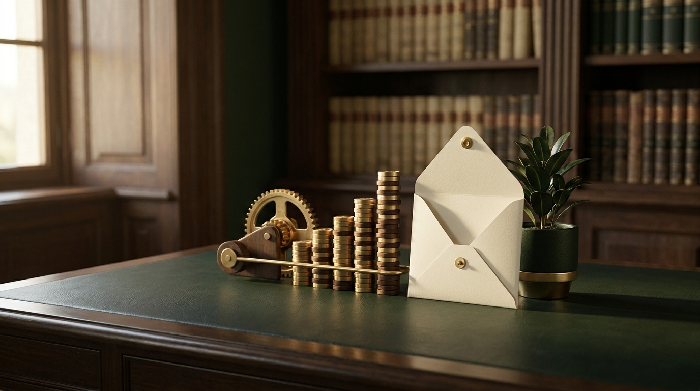

Premi di produttività e welfare aziendale: il regime fiscale agevolato
I premi di risultato continuano a godere di un regime fiscale di favore: imposta sostitutiva ridotta al 5% per il triennio 2025-2027 e possibilità di conversione in welfare aziendale, esente da imposte entro i limiti di legge. Per lavoratori e datori conviene capire come si combinano detassazione, conversione e soglie reddituali prima della prossima erogazione.

Il fatto
La tassazione agevolata dei premi di risultato resta un tema centrale nella gestione delle retribuzioni variabili. Il regime poggia su due meccanismi distinti che spesso vengono confusi: l'imposta sostitutiva ridotta sulla quota erogata in denaro e l'esenzione fiscale della quota convertita in welfare aziendale.
È utile fare chiarezza, perché online circolano cifre disallineate rispetto alla normativa vigente. Di seguito ricostruiamo il quadro come risulta dalle fonti primarie, segnalando dove i dati richiedono verifica caso per caso.
Inquadramento normativo
La disciplina dei premi di risultato è contenuta nell'art. 1, commi 182 e seguenti, della legge 208/2015 (legge di Stabilità 2016). La norma prevede un'imposta sostitutiva dell'IRPEF e delle relative addizionali sui premi legati a incrementi di produttività, redditività, qualità o efficienza, purché previsti da contrattazione collettiva di secondo livello (aziendale o territoriale) e misurabili.
L'aliquota ordinaria della sostitutiva è del 10%. La legge 207/2024 (legge di Bilancio 2025) ha confermato la riduzione al 5% per i premi erogati negli anni 2025, 2026 e 2027, in continuità con quanto già disposto per le annualità precedenti.
Due limiti vanno tenuti distinti:
- Importo agevolabile del premio: la detassazione opera fino a 3.000 euro lordi per ciascun lavoratore (elevabili a 4.000 euro nelle aziende con coinvolgimento paritetico dei lavoratori, secondo la normativa di riferimento da verificare in concreto).
- Soglia reddituale di accesso: possono fruire della sostitutiva i soli titolari di reddito da lavoro dipendente non superiore a 80.000 euro nell'anno precedente a quello di percezione del premio.
La conversione in welfare segue invece le regole dell'art. 51, commi 2 e 3, del TUIR (DPR 917/1986). Quando il lavoratore sceglie di convertire il premio in beni e servizi welfare ricompresi nel cosiddetto paniere (previdenza complementare, sanità integrativa, istruzione, servizi alla persona, buoni e rimborsi tipizzati), quelle somme non concorrono a formare reddito imponibile nei limiti e alle condizioni previsti dalle singole lettere dell'art. 51.
Implicazioni pratiche
La convenienza dipende dalla scelta tra le due strade.
Se il premio resta in denaro, si applica la sostitutiva al 5%: il lavoratore riceve una somma netta più alta rispetto alla tassazione ordinaria, ma comunque imponibile.
Se il premio viene convertito in welfare, la quota interessata può risultare integralmente esente da imposte, nei limiti dell'art. 51 TUIR. In più, alcune voci welfare non scontano contribuzione previdenziale, con un vantaggio anche per il datore di lavoro.
La scelta non è neutra: il welfare offre un risparmio fiscale maggiore ma vincola la destinazione delle somme a determinati beni e servizi, non liberamente monetizzabili. Il denaro è disponibile da subito, ma fiscalmente più oneroso.
Attenzione alle cifre che circolano: non esiste un'aliquota generalizzata all'1% sui premi, e il riferimento a soglie di esenzione welfare di 5.000 euro va sempre ricondotto alle singole voci dell'art. 51 TUIR, ciascuna con il proprio plafond. Prima di comunicare numeri ai dipendenti, è opportuno verificare l'eventuale documento di prassi dell'Agenzia delle Entrate applicabile, citandone gli estremi.
Cosa fare in concreto
- Verificate il contratto di secondo livello: senza accordo aziendale o territoriale depositato non c'è detassazione. Controllate scadenze e obiettivi misurabili.
- Controllate la soglia reddituale: escludete dalla sostitutiva i lavoratori con reddito da lavoro dipendente superiore a 80.000 euro nell'anno precedente.
- Strutturate un piano welfare conforme: ricondurre le voci offerte alle lettere dell'art. 51, commi 2 e 3, TUIR e documentate i relativi plafond.
- Date al lavoratore una scelta informata: predisponete un prospetto comparativo netto tra premio in denaro al 5% e conversione in welfare, per la quota convertibile.
- Verificate la prassi aggiornata: prima di applicare aliquote o soglie, accertate gli estremi di circolari o risposte a interpello dell'Agenzia delle Entrate sul punto.
Consigliamo di far validare l'impianto del piano premi-welfare prima dell'erogazione, perché un errore di qualificazione può comportare il recupero delle imposte e delle sanzioni.
Disclaimer
Contributo informativo a cura di Tamburro & Partners - Avv. Giuseppe Tamburro. Non costituisce parere legale.
Ogni storia di lavoro ha i suoi tempi.
Se gestisci HR e vuoi un confronto su contenzioso, ispezioni o licenziamenti, scrivi allo studio. Ti rispondiamo entro un giorno lavorativo.